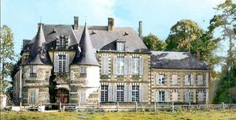
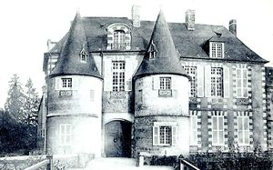

Recensement Jean-Claude Truffet
| Département | 27 — Eure |
| Canton | Romilly-sur-Andelle |
| Commune | Mainneville |
| Type d'édifice | Château |
| Période d'origine | XV |


MAINNEVILLE, est la capitale des villes de Bleu. Son premier seigneur, le sieur Geoffroy, compagnon de Guillaume le Bâtard, embarque pour l'Angleterre. Après la conquête, il reçoit pour prix de sa bravoure, la charge de connétable (chef des forces armées) et le fief de Mainneville. La seigneurie, au milieu des bois, traversée par la Levrière, est attribuée plus tard au ministre de Philippe le Bel, Enguerran de Marigny qui remplace le manoir par un château. Il commande des statues aux meilleurs sculpteurs de son temps. Deux, très belles, sont encore dans l'église Saint-Pierre-Saint-Paul. Ce fut du château de Mainneville, que partit le roi Jean, lorsqu'en 1356, il alla à Rouen surprendre et saisir Charles le Mauvais. Ce château fut rendu au roi d'Angleterre, en 1419, après la prise de Gisors. Celui qui existe est un bel édifice à tourelles, de la fin du XVe ou du commencement du XVIe siècle. Ce domaine était au nombre de ceux que possédait Enguerrand de Marigny dans le Vexin, puis il passa dans la maison des Roncherolles, ensuite dans celle des Dauvet : Pierre de Roncherolles, au XVe siècle, donna aux pauvres des communes de Mainneville, Longchamps et Mesnil-sous-Vienne, les rentes qui forment encore la dotation de leurs bureaux de bienfaisance. Le 16 février 1711, le marquis Louis-Benoît Dauvet signa l'acte d'achat du château. Il avait épousé, le 1er octobre 1710, Marie Magon de La Gervesais, fille de Nicolas Magon, connétable de Saint-Malo.
MAINNEVILLE, château d'Enguerrand de Marigny ; château du XIVe siècle remanié au XVIe??XVIIe siècle et au XVIIIe siècle. Il a conservé son parc à gibier. Vers 1525, Louis de Roncherolles, héritier d'Ide de Marigny par les Fécamp, les Gamaches et les Châtillon, avait fait bâtir un grand corps de logis en pierre de taille, de dix-sept toises de long sur cinq de profondeur (31 m 70 sur 9 m 75), aux angles duquel s'élançaient quatre tourelles, et dans ce nouvel édifice, qui en remplaçait un autre, le constructeur avait établi, peu d'années après, le 19 mai 1535, cette partie du château fut détruite par un incendie qui dévora en même temps les archives renfermées dans l'une des tourelles et, notamment, un cartulaire d'Enguerrand de Marigny. Cette circonstance donna lieu, le 12 janvier 1535 et les jours suivants, à une enquête dont le procès-verbal, outre les renseignements qui précèdent, contient quelques détails intéressants pour la topographie du château. Le seul ancien logis qui restât était situé au nord, parallèlement à celui brûlé. Contre ce logis du nord s'appuyait la chapelle, qui bordait la cour à l'ouest et dont le chevet était relié au logis neuf par un pressoir. Une galerie de bois, remplacée sous Henri III par une autre en pierre et brique, régnait à l'est, le long d'un mur encore existant et qui remonte certainement à la construction primitive. On pénétrait dans la cour par un portail ouvert à l'extrémité orientale du logis du nord et dont les deux tours constituent aujourd'hui le vestige extérieur le plus apparent du château bâti par Enguerrand de Marigny.
Famille de Louis de Roncherolles
"
Mainneville
gps 49° 22' 26" nord, 1° 41' 01" est